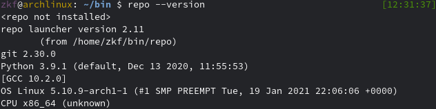
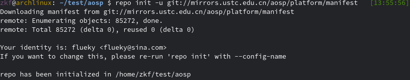
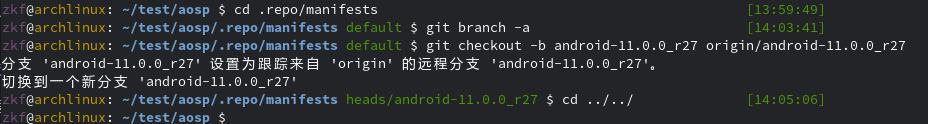
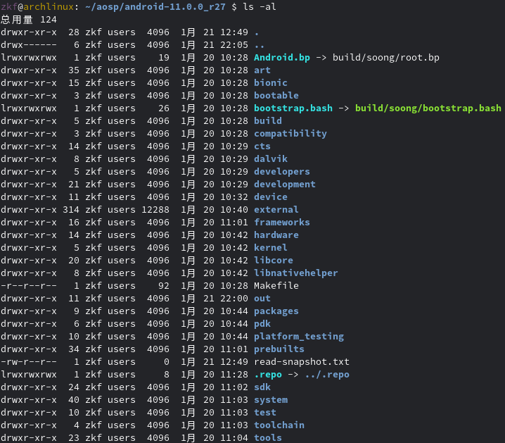
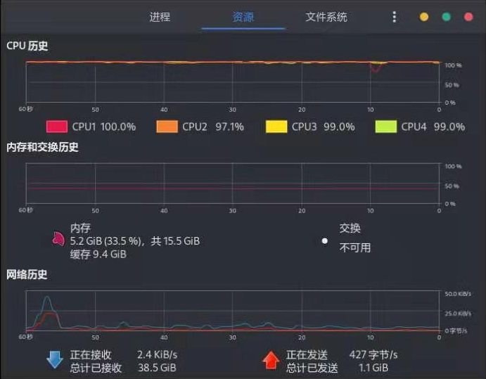
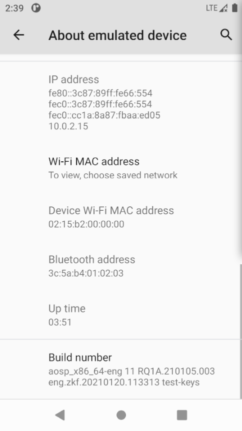

很多人都写，如何在 Ubuntu 下编译 Android 源码。今天，标新立异一次。
环境准备
本次编译基于 Arch 系统。需要安装些开发组件，比较容易。
1
| sudo pacman -S base-devel
|
至于 jdk 环境，有人说需要安装 open jdk 8 ，但是看 Android 源码中，prebuilts 目录下有提供 jdk 目录。
下载源码
国内下载源码，一般通过清华大学 AOSP 镜像或 中国科技大学 AOSP 镜像。他们也提供具体教程。
尝试过很多次，总结出一个比较实用的下载方式。
下载 repo 工具
Android 源码仓库有数百个，因此 google 使用 python 写 repo 用于管理其源码库。
1
2
3
4
5
6
7
8
9
10
11
12
13
14
15
16
| # 在用户目录下创建bin目录，并进入
mkdir ~/bin
cd ~/bin
# 将bin目录加入到环境变量
vim ~/.bash_profile
# 添加下面配置
export PATH=$PATH:~/bin
# 使配置的环境变量生效
source ~/.bash_profile
# 下载 repo 工具，有两种方式，我使用第二种
# 方式一，清华大学 aosp 提供的下载方式
curl https://mirrors.tuna.tsinghua.edu.cn/git/git-repo -o repo
chmod +x repo # 添加可执行权限
# 方式二
git clone https://mirrors.tuna.tsinghua.edu.cn/git/git-repo
ln -sf git-repo/repo repo
|
检查 repo 版本。

repo init 原理
在执行 repo init 命令之前，有必要了解下 repo 的工作原理。可以更好的知道，后买每步操作的意义，如无兴趣，可跳过。
repo 本身只是一个 python 文件，但是他的功能很多，远远超出一个文件所能承受的能力。因此，在执行 repo init 命令时，它首先会 clone 一份自己的仓库，也即 REPO_URL 所指定的地址。其次再去从 -u 指定的 url 中获取源码仓库的清单文件。
1
2
3
| REPO_URL = os.environ.get('REPO_URL', None)
if not REPO_URL:
REPO_URL = 'https://gerrit.googlesource.com/git-repo'
|
这段代码表示，repo 默认从 goole 的服务器同步。解决方案有两种。
1
2
3
4
5
6
7
| # 方式一，添加 REPO_URL 环境变量
vim ~/.bash_profile # 添加下面的内容
export REPO_URL=https://mirrors.tuna.tsinghua.edu.cn/git/git-repo
source ~/.bash_profile # 使配置生效
# 方式二
# 执行 init 命令时，手动指定 repo url
repo init --repo-url=https://mirrors.tuna.tsinghua.edu.cn/git/git-repo -u manifest
|
但是，之前下载 repo 工具时，已经 clone 过 git-repo 仓库。是可以复用的。
1
2
3
4
| mkdir ~/aosp # 创建 Android 源码目录
cd ~/aosp # 后面所有命令都在此目录下执行
mkdir .repo # 创建 .repo 目录，其实 init 执行时也会创建
ln -sf ~/bin/git-repo .repo/repo # 创建快捷方式，指向之前的 repo 仓库
|
此方案，建议熟悉 linux 命令的同鞋使用，如果你是一只 linux 小白或菜鸟，或许有难度。
初始化仓库
很多教程，有介绍使用 -b 参数，表示需要同步的代码版本，如 -b android-4.0.1_r1 。想说，查找能同步的代码版本列表，是个难题。因为我们打不开这个地址 https://source.android.com/setup/start/build-numbers#source-code-tags-and-builds （有梯子的可以嘲笑下）。或许有哪些热心的小伙伴整理过。但是，完全没有必要使用 -b 。
1
2
3
| # 此处假装，你已经知道了配置 REPO_URL 或复用 git-repo 仓库。
# 不推荐使用 http 协议，因此只能使用科大的源
repo init -u git://mirrors.ustc.edu.cn/aosp/platform/manifest
|
下面是复用了 git-repo 仓库的截图。

也许会提示没有配置 git 用户信息，使用下面两条命令即可。
1
2
3
| git config --global user.name " Your Name "
git config --global user.email " Your Email"
git config -l # 查看配置的结果
|
选择同步指定分支
刚说了，没有必要在 init 时，指定 -b 参数。因为有更便捷的方式。
1
2
3
4
5
| cd .repo/manifests
git branch -a # 查看全部版本列表
# 如同步 android-11.0.0_r27
git checkout -b android-11.0.0_r27 origin/android-11.0.0_r27
cd ../../
|
如果后面还需要同步其他分支的代码时，还可以用这种方式。

同步代码
执行下面命令，静等即可。建议选择白天，如果网速可以。两三小时就可以下载完成。
1
2
3
4
5
6
7
8
9
10
11
12
13
14
15
| repo sync
# 上面的命令可能会执行失败，因此需要一个自动继续执行的脚本
vim ~/bin/auto-repo # 添加下面的内容
#!/bin/bash
echo "=========start repo sync=========="
repo sync
while [ $? != 0 ]
do
echo "========sync failed,re-sync again=========="
sleep 2
repo sync
done
|
然后使用 auto-repo 同步仓库即可。下载完成后如图：

切换源
如果之前已同步过 aosp 代码，现在去要切到清华或科大的源。只需修改 manifests 的仓库地址。
1
2
3
4
5
6
7
8
9
10
11
12
13
14
15
16
17
18
| [core]
repositoryformatversion = 0
filemode = true
[filter "lfs"]
smudge = git-lfs smudge --skip -- %f
process = git-lfs filter-process --skip
[remote "origin"]
url = git://mirrors.ustc.edu.cn/aosp/platform/manifest
fetch = +refs/heads/*:refs/remotes/origin/*
[branch "default"]
remote = origin
merge = refs/heads/master
[branch "android-11.0.0_r27"]
remote = origin
merge = refs/heads/android-11.0.0_r27
|
编译代码
1
2
3
4
5
6
7
8
9
10
11
12
13
14
15
16
17
18
19
20
21
22
23
24
25
26
27
28
29
30
31
32
33
34
35
36
37
38
39
40
41
42
43
44
45
46
47
48
49
50
51
52
53
54
55
56
57
58
59
60
61
62
63
64
65
66
67
68
69
70
71
72
73
74
75
76
77
78
79
80
81
82
83
84
85
86
87
88
89
| # 初始化编译环境
source build/envsetup.sh
# 选择要编译的目标版本
lunch
#-----------以下是终端显示内容----------------
You're building on Linux
Lunch menu... pick a combo:
1. aosp_arm-eng
2. aosp_arm64-eng
3. aosp_blueline-userdebug
4. aosp_blueline_car-userdebug
5. aosp_bonito-userdebug
6. aosp_bonito_car-userdebug
7. aosp_bramble-userdebug
8. aosp_car_arm-userdebug
9. aosp_car_arm64-userdebug
10. aosp_car_x86-userdebug
11. aosp_car_x86_64-userdebug
12. aosp_car_x86_64_app-userdebug
13. aosp_cf_arm64_auto-userdebug
14. aosp_cf_arm64_phone-userdebug
15. aosp_cf_x86_64_phone-userdebug
16. aosp_cf_x86_auto-userdebug
17. aosp_cf_x86_phone-userdebug
18. aosp_cf_x86_tv-userdebug
19. aosp_coral-userdebug
20. aosp_coral_car-userdebug
21. aosp_crosshatch-userdebug
22. aosp_crosshatch_car-userdebug
23. aosp_flame-userdebug
24. aosp_flame_car-userdebug
25. aosp_redfin-userdebug
26. aosp_sargo-userdebug
27. aosp_sunfish-userdebug
28. aosp_trout_arm64-userdebug
29. aosp_trout_x86-userdebug
30. aosp_x86-eng
31. aosp_x86_64-eng
32. arm_krait-eng
33. arm_v7_v8-eng
34. armv8-eng
35. armv8_kryo385-eng
36. beagle_x15-userdebug
37. beagle_x15_auto-userdebug
38. car_x86_64-userdebug
39. db845c-userdebug
40. fuchsia_arm64-eng
41. fuchsia_x86_64-eng
42. hikey-userdebug
43. hikey64_only-userdebug
44. hikey960-userdebug
45. hikey960_tv-userdebug
46. hikey_tv-userdebug
47. pixel3_mainline-userdebug
48. poplar-eng
49. poplar-user
50. poplar-userdebug
51. qemu_trusty_arm64-userdebug
52. silvermont-eng
53. uml-userdebug
54. yukawa-userdebug
55. yukawa_sei510-userdebug
Which would you like? [aosp_arm-eng] 31
============================================
PLATFORM_VERSION_CODENAME=REL
PLATFORM_VERSION=11
TARGET_PRODUCT=aosp_x86_64
TARGET_BUILD_VARIANT=eng
TARGET_BUILD_TYPE=release
TARGET_ARCH=x86_64
TARGET_ARCH_VARIANT=x86_64
TARGET_2ND_ARCH=x86
TARGET_2ND_ARCH_VARIANT=x86_64
HOST_ARCH=x86_64
HOST_2ND_ARCH=x86
HOST_OS=linux
HOST_OS_EXTRA=Linux-5.10.9-arch1-1-x86_64-Arch-Linux
HOST_CROSS_OS=windows
HOST_CROSS_ARCH=x86
HOST_CROSS_2ND_ARCH=x86_64
HOST_BUILD_TYPE=release
BUILD_ID=RQ1A.210105.003
OUT_DIR=out
PRODUCT_SOONG_NAMESPACES=device/generic/goldfish device/generic/goldfish-opengl hardware/google/camera hardware/google/camera/devices/EmulatedCamera device/generic/goldfish device/generic/goldfish-opengl
============================================
|
由于使用模拟器测试，因此选择 x86 或 x86_64 的编译目标。我选择 31 aosp_x86_64-eng 。
在执行，最后的编译操作之前，需要了解下电脑的 CPU 核心数量。
1
2
3
4
5
6
| cat /proc/cpuinfo | grep 'process'
# 下面表示 4 核
processor : 0
processor : 1
processor : 2
processor : 3
|
最后，使用 make -j4 执行编译。

我的电脑性能比较差，如图。耗时约 10 小时。建议睡前执行。万一不出错的情况下，睡醒就完成了。
编译成功之后，使用 emulator 命令启动模拟器。

遇到的错误
编译过程中，遇到两个 so 文件没有，通过添加快捷方式引用到系统中，其他新版本的 so 。
libncurses.so.5 -> /usr/lib64/libncursesw.so.6
libtinfo.so.5 -> libtinfo.so.6
1
2
| sudo ln -sf /usr/lib64/libncursesw.so.6 /usr/lib/libncurses.so.5
sudo ln -sf /usr/lib/libtinfo.so.6 /usr/lib/libtinfo.so.5
|
遇到 command not found 错如，如 zip ，直接安装即可。
其他错误还未遇到。